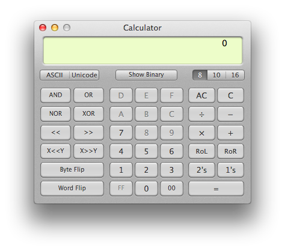
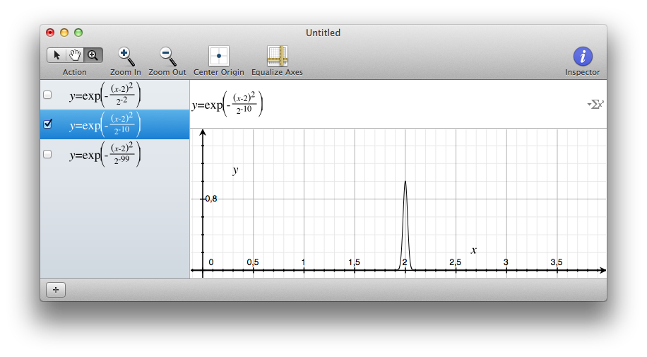
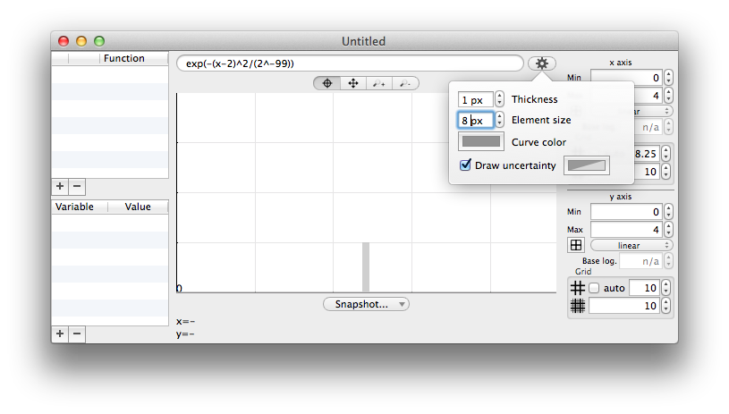

Chalk
Computations done right.
Introduction
What is Chalk, what it is not
Chalk is a calculator. Great. And so ? Don't we already have a billion calculator softwares ? Yes, we do. (And at this point you think : what stupid argument will be advanced this time to justify a new one ? Does it connect to the cloud ? Does it use vocal recognition ? Does it share the computations on Facebook ? What super-sexy feature (that I will never use) *had* to be developed in 2017 ?)
Well... none of them, of course. Simply : in my opinion, almost all of those existing calculators just fail at being good.
Really, they suck.
Now, up to me to explain why.
I think that computers have always been the worst calculators, less handy than any real "desktop" calculator. The first really good calculator I ever had was a TI-92, and (provocation), in some sense, no computer calculator application can compete.
When I say that computers cannot compete, do not misunderstand. I you use Matlab, Octave, Scilab, Maple, Wolfram alpha… you get impressive results. But some of those software are expensive, and they are far from being "light" tools. The problem is that sometimes, even for basic computations, you need them just because nothing else will do the job. And that's a shame.
What I mean is that computers are powerful, incredibly powerful. And even if a calculator should be in the basic toolbox, it does not mean that the calculator itself should be basic. It must still be a light, handy tool, but able to exploit the computer potential. A very basic example : if you ever have to make an integer multiplication with very large numbers (more than 64 bits), what do you do ? How much time do you spend looking for a decent application that can handle it without overflowing ? Why can't the OS standard calculator do that ? Seriously, it's not that difficult !
To summarize, Chalk tries to fix all the points that I think are failures in standard calculators (and there are a lot of them, see the list below).
I think that what you used to think were normal limitations in basic calculators, are irrelevant nowadays.
Computers are not that limited ! Calculators must be improved. Chalk is a try to show that it is possible.
But Chalk is designed to be a small tool anyway, it is not Matlab. It must be possible to start and discard it like a widget. Neither is Chalk a number crusher. If you want to perform expensive computations, look at another software. Chalk is "slow". Don't worry, you won't notice lags when computing formulas ! But since it is designed for precision and arbitrary large computations, it is not highly efficient.
What Chalk tries to fix
Here is a non-comprehensive list of what Chalk tries to do right. This is just a quick preview, more details will be given along the documentation.
Do not forget that I want to compare Chalk to what you have in the basic MacOS toolbox, that is to say Calculator and Grapher. For some features, it seems pedantic, and Chalk is not that great. But if Chalk could do it, Calculator could do it too. But it does not. And you can blame it.
Open the calculator
Calculator : Different interfaces, and a single window. You can't even open two calculators. Notice that a programmer is not allowed to use a decimal point.
Chalk : Open as many windows as you want. You can have an advanced interface, just display it when needed, you won't have to switch windows.
Typing an expression
Let's say you have to compute (12+34)/(56+78).Calculator : Where do I type my full expression ? Is it a joke ? I use a computer, with a keyboard and a large screen, why do you mimic the poor interface of minimalist calculators ? 
Chalk : Here in Chalk you just type it. Notice that I made a mistake. Oh, I can see it and correct it ! Incredible !
Calculator : I hope I didn't make a mistake while typing…

Chalk : Oh, my expression is visible in a beautiful fraction ! And we are only in 2017 !
Get an exact result when possible
You can find it strange to claim the Chalk is better because it gives exact results. Yet again, do not misunderstand. Some computations cannot give exact results. But Chalk will allow to keep exact (integer) computations as long as you do not need an estimation.
Here are some examples of what Chalk computes right (not like Calculator).
Calculator
- 9223372036854775807+1 = 1 (because it is limited to 63 bits signed integers)
- 9223372036854775805+1 = 1 (because it is buggy)
- 9223372036854775807*2 = … (not even possible with integers)
- 1e16+1 = 1e16 (because it is limited to 64 bits double precision)
- 1/3*3 = 0.99999999999999 (because it does premature rounding)
- 0.1/3 = 0.03333333333333 (because it does premature float computations)
Chalk
- 9223372036854775807+1 = 9223372036854775808 (no 64 bits limit)
- 9223372036854775805+1 = 9223372036854775806 (no 64 bits limit)
- 9223372036854775807*2 = 18446744073709551614 (no 64 bits limit)
- 1e16+1 = 10000000000000001 (real numbers are interpreted as integers when possible)
- 1/3*3 = 1 (Chalk handles fractions)
- 0.1/3 = 1/30 (real numbers are interpreted as fractions when possible)
Please note that we only mentioned integer computations. Limited precision on floats is also managed cleverly in section Reals, uncertainty and intervals.
If no exact result is possible, display only what is exact
Some computations just cannot give exact results with finite-precision numbers. There will always be some rounding.
This is not the problem. The problem is when the calculator gives you wrong numbers instead of limiting the result to what is true.
Calculator
- exp(99) = 9.88903031934689E42 (Erroneous rounding. A correct rounding should be 9.8890303193469e42)
Chalk
With a 53-bits significand precision (which is equivalent to a standard 64-bits double);- exp(99) = 9.88903031934695…E42 (the "…" denotes dirty digits that are ignored because they could be wrong)
- exp(99) = 9.88903…E42
- exp(99) = 9.889030319346946770560030967138037101405082607199335173401997153711094447007…E42
Chalk can even show you where the inexact computations occured.
Chalk is VERY cautious about floating numbers and always answers with true digits. This is possible by using computations with uncertainty intervals (see section Reals, uncertainty and intervals).
Give access to standard math
When you are a scientist, you often need to perform some computations with a little more math
- Some arithmetic like GCD or LCM, primes
- Matrices
- Complex numbers
- Quaternions
- Different bases
And guess what ? Chalk implements all of them. And more.
Much more…
For convenience, Chalk also manages list of numbers to perform the same computation on different arguments. It can also store values into variables for reuse, with dynamic variable update if there are dependencies. You can even rely on files to store large input or outputs.
And we are only talking about the Compute module of Chalk, there is also a grapher and a bit manipulator.
Calculator
What is different with Chalk ?
Apart from all the convenient functions that a tool like Chalk can implement, the real point to look at is the computation engine. Arbitrary large integers of arbitrary precise floating numbers are just a technical detail.
The only feature that is really interesting is that Chalk considers real numbers not like a single value, but like intervals, with a lower and an upper bound. This represents the uncertainty inherent to a floating number encoded with a finite number of bits. And since all implemented computations are interval-aware, the result is an interval, that evolved with the uncertainty of all the floating computations. That's how Chalk can display only true digits : they are the ones that are common to the lower and the upper bound of the result.
Chalk can tell you the underlying uncertainty interval.
And for practical purpose, since exact computations with uncertainty is not always what you want, Chalk provides three computation modes.
Computation modes
Chalk has three computation modes that serve different purposes.
- Exact mode (=) : if the result cannot be computed exactly, an error is raised.
- Approximation (≈) : the way calculators usually work. Rounding can occur to provide a result.
- Approximation with uncertainty (≈[]) : same as before, but the uncertainty is also reported along with the result.
The main "compute" button gives a quick access to all those modes by pressing alt (⌥) or shift (⇧).

Please note that for approximation modes, when some numerical events occurs (like rounding, overflow, underflow…), a flag is raised and reported with the result.
Computation flags
A major feature of Chalk is that when a computation cannot be exact, a flag is raised and reported to the user. Different type of flags can be encountered, and multiple ones can be reported together :
- Inexact : some rounding occured ;
- Not a number (NaN) : an invalid numeric operation was attempted ;
- Division by zero : a division by zero was attempted ;
- Overflow : some value was too big to be stored, under the current bit limits ;
- Underflow : some value was too small to be combined with another, under the current bit limits ;
- Exponent range : an exponent range was too large to be stored in the current floating number representation ;
When displaying the text form of the input, you can also use the mouse cursor to see which part of the computation raised the flags.
Numbers
A number in Chalk can take different forms. Here are the different considerations that you should be aware of.
Digits
Chalk supports different bases, so a sequence of digits defining a number may contain various alpha-numeric characters.
Because of the ability of Chalk to optionally group digits for more friendly display, it should also accept spaces between digits on input, to let copy/paste work from output to input even in this case. However, this would not work with Reverse Polish notation. As a compromise, the unbreakable-space character can be used (⌥+<space>). With classical infix notation, regular and unbreakable spaces can be used inside a number ; with Reverse Polish Notation, unbreakable spaces are allowed inside a number, but a regular space will delimit a new number. On output, when grouping digits, Chalk always use an unbreakable space.
Integers
An integer is the simplest kind of number. It is just a sequence of digits that might be negative. The digits go from 0 to 9 for decimal numbers, but other bases are addressed as well (see Bases).
Integers in Chalk can have a very large number of bits. The maximum value is set in the preferences as "Integer compute bits". Usual applications handle integers with 64 bits, coding numbers up to 264. Chalk has a theroretical upper limit of 264 bits, coding numbers up to 2264, but you will run out of memory far before reaching such a value.
When Chalk computes in "exact" mode and encounters integer overflow regarding the current limit, it stops with an error. In "estimation" mode, in converts the integer to a float value and raise the "inexact" flag.
When Chalk computes in "exact" mode and must perform a non-integer operations, it tries to use a fraction if possible, or stops with an error otherwise. In "estimation" mode, in converts the integer to a float value and raise the "inexact" flag.
Fractions
Fractions are just stored as two integers. They are interesting to keep exact results as long as possible when working with integers and divisions.
Suprisingly, in the Preferences, you can set a bit limit for the denominator, different from the standard integer bits limit. This is useful to prevent chalk from converting decimal input (like 1.234) to fractions when it would requires a very large denominator. In that case, an "approximation" is more interesting.
Reals, uncertainty and intervals
Some real numbers can be stored with an exact bit representation, if they are a finite sum of power of two components, where the power can be negative and does not exceed the current bits limit. Such numbers are stored with their exact representation.
A real number that does not have such an exact bit representation, is stored as an interval, with a lower and an upper bound. This is a way to cope with the uncertainty of numerical computations.
A third value, the "best estimation", is also stored. This value is obviously within the interval bounds. This is the preferred value to display if the user does not want to see the uncertainty.
Each operation in Chalk is interval-aware and updates the bounds and the best estimation, so that the final result holds all the cumulated uncertainty of the numerical computations.
Such values using intervals are created by Chalk when needed (when a computation cannot be exact), but can also be created using an interval syntax ("[…;…]"), or an uncertainty syntax ("x ± d or x +/- d").
Finally, please note that the interval bounds use the exact same precision as defined for real numbers in the preferences. But for the sake of simplicity, the uncertainty is always displayed with a single significand digit. For instance, 1±0,071 is displayed as 1…±7e-2.
To be overly conservative, it could have been written 1…±8e-2, that is to say that the significand digit of uncertainty could be "rounded to upper" rather than "rounded to nearest". But this would make uncertainties look artificially large.
The uncertainty "d" can even be expressed as % (per cent), ‰ (per thousand), ‱ (per ten thousand) or ppm (per million), like x±5%.
Scientific notation
The standard notation 1.23e45 is a standard shortcut to mean 1.234*1045
In C language family, it is less known that 1.23p45 is a standard shortcut to mean 1.234*245, because in fact, it only works for hexadecimal literal, that is to say some number like 0x1.23p45. Chalk supports the p exponent for every base.
In both case, a problem occurs if e and p are valid digits in the current base, that's why p was introduced for hexadecimal literals in C. Chalk propose a disambiguification by adding a # before the exponent symbol. 0x1e2 will be interpreted as the value 0x1e2 (482 in decimal), while 0x1#e2 will be interpreted as 0x1*102, that is to say 0x6A (100 in decimal).
Bases
Chalk can handle non-decimal bases. It means that :- On input, a number can be written with the digits of a specific base ;
- On output, a number can be displayed in any base ;
To help selecting a base, Chalk provides a way to define suffixes and prefixes identifying a base. For instance, "0x" can be used as an hexadecimal prefix, and "h" as an hexadecimal suffix. Both can be used at the same time. Thus, "0xA", "Ah" and "0xAh" represent the decimal value 10. It is up to the user to avoid using forbidden characters in the prefixes/suffixes, like a digit used by the base itself.
The preferences are used to defined base prefixes and suffixes.
On output, the right panel of Chalk provides a control to set the base.
The input using base 10 is displayed using base 2.
Complex numbers and quaternions
Chalk support complex numbers, so the symbol i is reserved. You can enter a number like 1+i.
Please note that 1+2i is invalid for many reasons, you should use the multiply operator as 1+2*i.
Complex numbers are just a particular case of quaternions. So, in reality, Chalk supports quaternions, with i, j and k.
Please note that i, j and k are obviously reserved symbols ; nevertheless they can be used as constants.
For quaternions, the division is possible, but the notation p/q is ambiguous and is provided only for convenience. In Chalk, q/r is computed as q*r-1, not as r-1*q
Boolean
You may be familiar with boolean operations that only take two values : true or false. Here again, Chalk is somewhat different. It declares instead 5 "boolean" values : no, unlikely, maybe, certainly, yes. true and false can still be used instead of yes and no.
You are right, it is quite wrong to keep calling it "boolean", but the terminology has been kept for simplicity.
It is no more boolean logic, just some fuzzy logic. It was introduced to deal properly with prime numbers, because when it comes to the primality test of large numbers, most efficient algorithms are probabilistic. Theoretically, when such a test returns "no", it really means "no"; but when it returns "yes", it really means "almost 100% sure", that is to say "certainly" in Chalk's vocabulary. And for the sake of completeness, "unlikely" was introduced as a the opposite of "certainly", and "maybe" means "could be true as well as false."
You will certainly only encounter yes and no when using the calculator module of Chalk, but those extra logic symbols could be useful in the future.
If they were to be represented as probabilistic values, no is 0, unlikely is ε, maybe is 1⁄2, certainly is 1-ε, yes is 1.
Even if such a conversion to a real number makes sense, Chalk only allows logic operations for those special values : "certainly*certainly" is not accepted, for instance.
Operations like AND, OR are defined as a kind of MIN and MAX, NOT is trivial, and XOR is defined as (A AND (NOT B)) OR ((NOT A) AND B).
Under the hood, the maybe value is also used internally by the Grapher module when displaying 2D predicates, when sub-pixel precision would be needed.
Matrices
Chalk supports matrices with a "parenthesis-only" syntax. A matrix can contain complex or quaternion values. Boolean values are also supported, but it is not very useful apart from structuring data, because it drastically restricts the operations you can perform, since no arithmetic is possible.
Let M and N be matrices and k a scalar number ; supported operations are :
- addition, substraction: M+N, M-N (if dimensions are compatible)
- multiplication by a matrix: M*N (if dimensions are compatible).
- multiplication by a scalar: k*M
- exponentation: M^k, M**k (if k is an integer; negative values invert the matrix).
- inversion: M^-1, M**-1 or 1/M or invert(M) (if the matrix is invertible).
- division: division is ambiguous and should not be defined for matrices, but in Chalk it is a handy syntax for matrix inversion.
- determinant: det(M) (if the matrix is invertible).
- trace: trace(M) (if the matrix is square).
- identity: identity(k) (with k a positive integer); generates an identity matrix of size (k,k).
Chalk also supplies convenient operators. Let's say you have a matrix M. The expression 1+M is mathematically invalid, but in most cases, you just want to add 1 to each element of the matrix.
With Chalk you can type 1+?M to exactly say that.
Similarly, functions like cos(), sin(), tan()… are applied to every element instead of being refused as meaningless or as infinite sums of limited development.
Accessing a subset of elements of a matrix is possible using Subscripts and ranges.
Lists
Prime decomposition is one of the rare function that needs to return a list of values. So, Chalk had to support lists just as a kind of storage flavour.
But the support of lists in Chalk has been enlarged to a different meaning : like a set of operands for batch operations.
When a list is used as an operand, the operation is called as many times as the number of elements in the list, and return a list of all the results.
Similarly to matrices, lists support convenient operators for a slighly different meaning. Here again, just add a question mark after an operator. For instance, instead of a cartesian product, the operator *? is an element-wise multiplication, that can work only if list sizes matches.
Accessing a subset of elements of a list is possible using Subscripts and ranges.
Subscripts and ranges
Accessing a subset of elements of matrices or lists is possible with square brackets, and zero-based indexing.
More than simple indexing, a range can even be defined between two bounds, with an include (...) or exclude (..<) specifier for the upper bound.
Finally, the joker * can be used to match a full subset.
Strings
Strings are supported in Chalk when a function requires such an argument, like infile and outfile.
A string is delimited by simple quotes (') or double quotes (")
Raw values
A Raw value in Chalk denotes the binary representation of an integer or floating value, in a format compatible with the Bit manipulator. For instance, instead of a native integer with large precision, it can be a 64-bit float in IEEE754 with 1 sign bit, 11 exponent bits, and 52 significand bits.
Most arithmetic computations are not allowed with such values, because the purpose of Chalk is not to mimic the behaviour of implicit cast and fixed-width bit arithmetic. The only supported operators/functions are bitwise manipulations:
- NOT, AND, OR, XOR
- << for left shift, >> for right shift
- shift(x, delta), for left (delta > 0) or right (delta < 0) shift
- roll(x, delta), for left (delta > 0) or right (delta < 0) roll
- swap(x, s), for swapping consecutive packets of bit size s
To convert a chalk value to a raw value, the target representation must be specified:
- toU8(): converts to unsigned 8 bits integer
- toS8(): converts to signed 8 bits integer (sign bit it the most significand)
- toU16(): converts to unsigned 16 bits integer
- toS16(): converts to signed 16 bits integer (sign bit it the most significand)
- toU32(): converts to unsigned 32 bits integer
- toS32(): converts to signed 32 bits integer (sign bit it the most significand)
- toU64(): converts to unsigned 64 bits integer
- toS64(): converts to signed 64 bits integer (sign bit it the most significand)
- toU128(): converts to unsigned 128 bits integer
- toS128(): converts to signed 128 bits integer (sign bit it the most significand)
- toU256(): converts to unsigned 256 bits integer
- toS256(): converts to signed 256 bits integer (sign bit it the most significand)
- toU256(): converts to unsigned 256 bits integer
- toS256(): converts to signed 256 bits integer (sign bit it the most significand)
- toF16(): converts to IEEE754 16-bits float (1-5-10)
- toF32(): converts to IEEE754 32-bits float (1-8-23)
- toF64(): converts to IEEE754 64-bits float (1-11-52)
- toF128(): converts to IEEE754 128-bits float (1-15-112)
- toF256(): converts to IEEE754 256-bits float (1-19-236)
- fromU8(): converts from unsigned 8 bits integer
- fromS8(): converts from signed 8 bits integer (sign bit it the most significand)
- fromU16(): converts from unsigned 16 bits integer
- fromS16(): converts from signed 16 bits integer (sign bit it the most significand)
- fromU32(): converts from unsigned 32 bits integer
- fromS32(): converts from signed 32 bits integer (sign bit it the most significand)
- fromU64(): converts from unsigned 64 bits integer
- fromS64(): converts from signed 64 bits integer (sign bit it the most significand)
- fromU128(): converts from unsigned 128 bits integer
- fromS128(): converts from signed 128 bits integer (sign bit it the most significand)
- fromU256(): converts from unsigned 256 bits integer
- fromS256(): converts from signed 256 bits integer (sign bit it the most significand)
- fromU256(): converts from unsigned 256 bits integer
- fromS256(): converts from signed 256 bits integer (sign bit it the most significand)
- fromF16(): converts from IEEE754 16-bits float (1-5-10)
- fromF32(): converts from IEEE754 32-bits float (1-8-23)
- fromF64(): converts from IEEE754 64-bits float (1-11-52)
- fromF128(): converts from IEEE754 128-bits float (1-15-112)
- fromF256(): converts from IEEE754 256-bits float (1-19-236)
External values
When dealing with large inputs and large outputs, it may be handy to deport input and output to files. Chalk supplies two functions : infile(some url) and outfile(some url) than respectively read and write to the given URLs.
A URL is specified as a string.
An input content must be a string that could have been used as regular Chalk input. It is not restricted to values, it can be expressions.
The output is a string similar to what would be visible in Chalk if no pretty print was used.
To write to the output, the assignation operator must be used.
Please note that input URL can be remote locations (http), but output URLs cannot be.
Please also note that URLs can be named pipes, to stream data easily.
Variables
To store results and reuse them easily, Chalk supports variables.
A variable's name cannot start by a digit, and cannot be the same as a reserved symbol like i, j or k (see quaternions).

The variables can be seen on the left inspector.
Assignation
The static assignation to a variable can be done by ":=" or "<-".
A dynamic assignation can be done by "::=" or "<<-".
The difference between static and dynamic variables is explained below.
Dynamic and static variables
Let assume you set the value 1 to a and the value a+1 to b.
Now, you update a to 2. Do you want b to be updated ?
There is no good answer, it will always depend on what you are doing with your variables.
That's why Chalk makes a difference between static and dynamic assignation.
When a variable is dynamic, it will be updated when any dependency is updated. When a variable is static, it won't. The "dynamic" property can be changed aterwards in the variable inspector.
Constants
Chalks defines a few constants.
- nan, NaN : The Not A Number special float value
- false, no, unlikely, maybe, certainly, yes, true : for booleans
- i : imaginary part for complexes
- j, k : additional imaginary parts for quaternions
- pi : π
- e : Euler's number equal to exp(1)
Operators
Standard operators
Chalk defines the following standard operators:
- +, -, *, / : arithmetic operators, that can be used for matrices if the dimensions are compatible. See also the convenient operators
- |…| : absolute value (or magnitude), there is also an abs() function
- ^, ** : power, there is also a pow() function. Negative, non-integer and complex exponents are supported
- …! factorial. If x is negative, x! returns -(|x|!)
- ==, <, ≤, >, ≥ : boolean predicates
- NOT, AND ( && ), OR ( || ), XOR ( ^^ ) : boolean operators
- <<, >> : shift operator, compatible with regular and raw values
- There is no roll operator, but a roll() function
- +/-, ± uncertainty operator that creates an interval around a value (example : 3+/-1 or 3±1). Please note that even for integer bounds, an interval is always a float value.
- ° : The degree operator is just a shortcut for a factor π/180, so that one can write sin(90°), for instance. Trigonometric functions are always in radians in Chalk.
Convenient operators
Convenient operators are a variation of operators designed to be handy. When dealing with matrices or lists, it is sometimes useful to apply the same operation to every element instead of performing the mathematical operation that would require the dimensions to match
Convenient operators are just regular operators postfixed with a question mark.
- +?, -?, *?, /?, ^?, **?, !?, ==?, <?, ≤?, >?, ≥?, NOT?, AND?, OR?, XOR?
Functions
Standard functions
Alphabetical list of supported function:
- abs(value) : absolute value (or magnitude). For complexes or quaternions, it returns the amplitude (as expected).
- acos(value) : return the arc cosinus (in radians) of a value.
- acosh(value) : return the hyperbolic arc cosinus of a value.
- angle(value) : return the argument (angle in radians) of a complex value.
- angles(value) : return the euler angles (in radians) of a quaternion value.
- asin(value) : return the arc sinus (in radians) of a value.
- asinh(value) : return the hyperbolic arc sinus of a value.
- atan(value) : return the arc tangent (in radians) of a value.
- atan2(y,x) : return the arc tangent (in radians) of the point (x,y). Please note that y,x are specified in that order, like the usual atan2() function of programming langages.
- atanh(value) : return the hyperbolic arc tangent of a value.
- binomial(n,m) : return the binomial (n,m).
- bits_concat_be(values...): concatenates raw values, bit endian style
- bits_concat_le(values...): concatenates raw values, little endian style
- bits_reverse(value): reverse the bits of a raw value
- cbrt(value) : return the cubic root of a value.
- cos(value) : return the cosinus of a value (in radians, see the ° operator).
- cosh(value) : return the hyperbolic cosinus of a value.
- conj(value) : return the conjugate of a quaternion value.
- det(value) : return the determinant of a matrix value.
- exp(value) : return the exponential, compatible with complex values.
- fibonacci(n) : return the nth fibonacci number.
- fromBase(x, n) : force the interpretation of x in base b.
- fromU8(value): converts from unsigned 8 bits integer
- fromS8(value): converts from signed 8 bits integer (sign bit it the most significand)
- fromU16(value): converts from unsigned 16 bits integer
- fromS16(value): converts from signed 16 bits integer (sign bit it the most significand)
- fromU32(value): converts from unsigned 32 bits integer
- fromS32(value): converts from signed 32 bits integer (sign bit it the most significand)
- fromU64(value): converts from unsigned 64 bits integer
- fromS64(value): converts from signed 64 bits integer (sign bit it the most significand)
- fromU128(value): converts from unsigned 128 bits integer
- fromS128(value): converts from signed 128 bits integer (sign bit it the most significand)
- fromU256(value): converts from unsigned 256 bits integer
- fromS256(value): converts from signed 256 bits integer (sign bit it the most significand)
- fromU256(value): converts from unsigned 256 bits integer
- fromS256(value): converts from signed 256 bits integer (sign bit it the most significand)
- fromF16(value): converts from IEEE754 16-bits float (1-5-10)
- fromF32(value): converts from IEEE754 32-bits float (1-8-23)
- fromF64(value): converts from IEEE754 64-bits float (1-11-52)
- fromF128(value): converts from IEEE754 128-bits float (1-15-112)
- fromF256(value): converts from IEEE754 256-bits float (1-19-236)
- Gamma(x) : return the Gamma function result of x.
- gcd(n,m) : return the greatest common divisor of n and m.
- golomb_rice_decode(value,[rice parameter=0]) : decompress a golomb bit stream, with optional rice encoding
- golomb_rice_encode(value,[rice parameter=0]) : compress a golomb bit stream, with optional rice encoding
- hconcat(values...): concatenates matrices horizontally
- identity(n) : builds the identity matrix of dimensions (n,n).
- interval(x, d, [direction=0]).
If direction is -1, returns [x-d;x]
If direction is 0 (by default), returns [x-d;x+d]
If direction is 1, returns [x;x+d]
- infile(url) takes the content from the location url (see External values).
- input(n) takes the input (string) from the nth previous computation.
- integral(expression, identifier, inf, sup, step) : integral approximation, by cumulating values of expression by setting identifier from inf to sup by steps of step.
- invert(value) : return the inverse of a scalar value (1/…) or the inverse of a matrix value.
- isprime(n,[algorithm=0]) : tells whether the absolute value of n is a prime number. The answer can be no, yes, certainly for a probabilistic test, maybe if it is out of the range of the selected algorithm. The possible algorithms are detailed in Prime numbers.
- jacobi(n, m) : return the jacobi symbol (n, m) where m must be odd.
- lcm(n,m) : return the lowest common multiple of n and m.
- ln(value) : return the natural logarithm (base e) of a value.
- log10(value) : return the 10-based logarithm of a value.
- matrix(rows,columns,[default value]) : builds a matrix.
- nextprime(n,[algorithm=0]) : return the prime following n, based on an algorithm similar to isprime(). If the answer is probabilistic, an inexact flag is raised.
- nthprime(n,[algorithm=0]) : return the nth prime, based on an algorithm similar to isprime(). If the answer is probabilistic, an inexact flag is raised.
- outfile(url) writes the value to the location url (see External values).
- output(n) takes the output (value) from the nth previous computation. Note that the index of the computations are displayed in the upper-left gray bubble of each item, and that this is a reverse order so that output(1) is always the last computation.
- output2(n) takes the output secondary value from the nth previous computation, as computed by the Bit manipulator.
- pow(x, y) : return xy, where y can be negative, non-integer or complex.
- primes(n,[algorithm=0]) : return the prime decomposition of n, based on an algorithm similar to isprime(). If the answer is probabilistic, an inexact flag is raised. A decomposition is a list of pairs, each pair being a prime and its power.
- primorial(n) : return the primorial of n.
- product(expression, identifier, inf, sup) : product serie, multiplying successive values of expression by setting identifier from inf to sup, where inf and sup are integers.
- roll(value, delta) : bitwise roll operator, to the left for positive delta, to the right otherwise. It is only compatible with raw values (because their bit size is explicit).
- root(value, n) : return the nth root of a value.
- shift(value, delta) : bitwise shift operator, to the left for positive delta, to the right otherwise. It is only compatible with integers and raw values.
- sin(value) : return the sinus of a value (in radians, see the ° operator).
- sinh(value) : return the hyperbolic sinus of a value.
- sqrt(value) : return the square root of a value.
- sum(expression, identifier, inf, sup) : sum serie, summing successive values of expression by setting identifier from inf to sup, where inf and sup are integers.
- swap(value, s) : bitwise swap of consecutive pairs of packets of size s, from lowest significand bits to most significant. It is only compatible with raw values (because their bit size is explicit).
- tan(value) : return the tangent of a value (in radians, see the ° operator).
- tanh(value) : return the hyperbolic tangent of a value.
- toU8(value): converts to unsigned 8 bits integer
- toS8(value): converts to signed 8 bits integer (sign bit it the most significand)
- toU16(value): converts to unsigned 16 bits integer
- toS16(value): converts to signed 16 bits integer (sign bit it the most significand)
- toU32(value): converts to unsigned 32 bits integer
- toS32(value): converts to signed 32 bits integer (sign bit it the most significand)
- toU64(value): converts to unsigned 64 bits integer
- toS64(value): converts to signed 64 bits integer (sign bit it the most significand)
- toU128(value): converts to unsigned 128 bits integer
- toS128(value): converts to signed 128 bits integer (sign bit it the most significand)
- toU256(value): converts to unsigned 256 bits integer
- toS256(value): converts to signed 256 bits integer (sign bit it the most significand)
- toU256(value): converts to unsigned 256 bits integer
- toS256(value): converts to signed 256 bits integer (sign bit it the most significand)
- toF16(value): converts to IEEE754 16-bits float (1-5-10)
- toF32(value): converts to IEEE754 32-bits float (1-8-23)
- toF64(value): converts to IEEE754 64-bits float (1-11-52)
- toF128(value): converts to IEEE754 128-bits float (1-15-112)
- toF256(value): converts to IEEE754 256-bits float (1-19-236)
- trace(value) : return the trace of a matrix value.
- vconcat(values...): concatenates matrices vertically
- Zeta(x) : return the Zeta function result of x.
Thematic list of supported function:
- Arithmetic or standard math
- abs(value) : absolute value (or magnitude). For complexes or quaternions, it returns the amplitude (as expected).
- binomial(n,m) : return the binomial (n,m).
- cbrt(value) : return the cubic root of a value.
- fibonacci(n) : return the nth fibonacci number.
- Gamma(x) : return the Gamma function result of x.
- gcd(n,m) : return the greatest common divisor of n and m.
- integral(expression, identifier, inf, sup, step) : integral approximation, by cumulating values of expression by setting identifier from inf to sup by steps of step.
- jacobi(n, m) : return the jacobi symbol (n, m) where m must be odd.
- lcm(n,m) : return the lowest common multiple of n and m.
- ln(value) : return the natural logarithm (base e) of a value.
- log10(value) : return the 10-based logarithm of a value.
- pow(x, y) : return xy, where y can be negative, non-integer or complex.
- product(expression, identifier, inf, sup) : product serie, multiplying successive values of expression by setting identifier from inf to sup, where inf and sup are integers.
- root(value, n) : return the nth root of a value.
- sqrt(value) : return the square root of a value.
- sum(expression, identifier, inf, sup) : sum serie, summing successive values of expression by setting identifier from inf to sup, where inf and sup are integers.
- Zeta(x) : return the Zeta function result of x.
- fromBase(x, n) : force the interpretation of x in base b.
- acos(value) : return the arc cosinus (in radians) of a value.
- acosh(value) : return the hyperbolic arc cosinus of a value.
- asin(value) : return the arc sinus (in radians) of a value.
- asinh(value) : return the hyperbolic arc sinus of a value.
- atan(value) : return the arc tangent (in radians) of a value.
- atan2(y,x) : return the arc tangent (in radians) of the point (x,y). Please note that y,x are specified in that order, like the usual atan2() function of programming langages.
- atanh(value) : return the hyperbolic arc tangent of a value.
- cos(value) : return the cosinus of a value (in radians, see the ° operator).
- cosh(value) : return the hyperbolic cosinus of a value.
- exp(value) : return the exponential, compatible with complex values.
- sin(value) : return the sinus of a value (in radians, see the ° operator).
- sinh(value) : return the hyperbolic sinus of a value.
- tan(value) : return the tangent of a value (in radians, see the ° operator).
- tanh(value) : return the hyperbolic tangent of a value.
- abs(value) : absolute value (or magnitude).
- angle(value) : return the argument (angle in radians) of a complex value.
- angles(value) : return the euler angles (in radians) of a quaternion value.
- conj(value) : return the conjugate of a quaternion value.
- exp(value) : return the exponential, compatible with complex values.
- pow(x, y) : return xy, where y can be negative, non-integer or complex.
- det(value) : return the determinant of a matrix value.
- identity(n) : builds the identity matrix of dimensions (n,n).
- hconcat(values...): concatenates matrices horizontally.
- invert(value) : return the inverse of a scalar value (1/…) or the inverse of a matrix value.
- matrix(rows,columns,[default value]) : builds a matrix.
- trace(value) : return the trace of a matrix value.
- vconcat(values...): concatenates matrices vertically.
- isprime(n,[algorithm=0]) : tells whether the absolute value of n is a prime number. The answer can be no, yes, certainly for a probabilistic test, maybe if it is out of the range of the selected algorithm. The possible algorithms are detailed in Prime numbers.
- nextprime(n,[algorithm=0]) : return the prime following n, based on an algorithm similar to isprime(). If the answer is probabilistic, an inexact flag is raised.
- bits_concat_be(values...): concatenates raw values, bit endian style
- bits_concat_le(values...): concatenates raw values, little endian style
- bits_reverse(value): reverse the bits of a raw value
- fromU8(value): converts from unsigned 8 bits integer
- fromS8(value): converts from signed 8 bits integer (sign bit it the most significand)
- fromU16(value): converts from unsigned 16 bits integer
- fromS16(value): converts from signed 16 bits integer (sign bit it the most significand)
- fromU32(value): converts from unsigned 32 bits integer
- fromS32(value): converts from signed 32 bits integer (sign bit it the most significand)
- fromU64(value): converts from unsigned 64 bits integer
- fromS64(value): converts from signed 64 bits integer (sign bit it the most significand)
- fromU128(value): converts from unsigned 128 bits integer
- fromS128(value): converts from signed 128 bits integer (sign bit it the most significand)
- fromU256(value): converts from unsigned 256 bits integer
- fromS256(value): converts from signed 256 bits integer (sign bit it the most significand)
- fromU256(value): converts from unsigned 256 bits integer
- fromS256(value): converts from signed 256 bits integer (sign bit it the most significand)
- fromF16(value): converts from IEEE754 16-bits float (1-5-10)
- fromF32(value): converts from IEEE754 32-bits float (1-8-23)
- fromF64(value): converts from IEEE754 64-bits float (1-11-52)
- fromF128(value): converts from IEEE754 128-bits float (1-15-112)
- fromF256(value): converts from IEEE754 256-bits float (1-19-236)
- golomb_rice_decode(value,[rice parameter=0]) : decompress a golomb bit stream, with optional rice encoding
- golomb_rice_encode(value,[rice parameter=0]) : compress a golomb bit stream, with optional rice encoding
- roll(value, delta) : bitwise roll operator, to the left for positive delta, to the right otherwise. It is only compatible with raw values (because their bit size is explicit).
- shift(value, delta) : bitwise shift operator, to the left for positive delta, to the right otherwise. It is only compatible with integers and raw values.
- swap(value, s) : bitwise swap of consecutive pairs of packets of size s, from lowest significand bits to most significant. It is only compatible with raw values (because their bit size is explicit).
- toU8(value): converts to unsigned 8 bits integer
- toS8(value): converts to signed 8 bits integer (sign bit it the most significand)
- toU16(value): converts to unsigned 16 bits integer
- toS16(value): converts to signed 16 bits integer (sign bit it the most significand)
- toU32(value): converts to unsigned 32 bits integer
- toS32(value): converts to signed 32 bits integer (sign bit it the most significand)
- toU64(value): converts to unsigned 64 bits integer
- toS64(value): converts to signed 64 bits integer (sign bit it the most significand)
- toU128(value): converts to unsigned 128 bits integer
- toS128(value): converts to signed 128 bits integer (sign bit it the most significand)
- toU256(value): converts to unsigned 256 bits integer
- toS256(value): converts to signed 256 bits integer (sign bit it the most significand)
- toU256(value): converts to unsigned 256 bits integer
- toS256(value): converts to signed 256 bits integer (sign bit it the most significand)
- toF16(value): converts to IEEE754 16-bits float (1-5-10)
- toF32(value): converts to IEEE754 32-bits float (1-8-23)
- toF64(value): converts to IEEE754 64-bits float (1-11-52)
- toF128(value): converts to IEEE754 128-bits float (1-15-112)
- toF256(value): converts to IEEE754 256-bits float (1-19-236)
- infile(url) takes the content from the location url (see External values).
- input(n) takes the input (string) from the nth previous computation.
- outfile(url) writes the value to the location url (see External values).
- output(n) takes the output (value) from the nth previous computation. Note that the index of the computations are displayed in the upper-left gray bubble of each item, and that this is a reverse order so that output(1) is always the last computation.
- output2(n) takes the output secondary value from the nth previous computation, as computed by the Bit manipulator.
- interval(x, d, [direction=0]).
If direction is -1, returns [x-d;x]
If direction is 0 (by default), returns [x-d;x+d]
If direction is 1, returns [x;x+d]
User-defined functions
A user can define his own functions with the assignation syntax.
Example : f(x, y) := x+y can then be used with f(1, 2).Prime numbers
A few functions are dedicated to prime computations : isprime(), nextprime(), nthprime() and primes(). Optionaly, a specific algorithm can be used to deal with primality tests, used as a secondary argument of those functions :
- 0 : best combination of the following algorithms
- 1 : use only the precomputed primes set embedded in Chalk
- 2 : use a standard Miller Rabin probabilistic test
- 3 : use an enforced Miller Rabin probabilistic test
- 4 : use a Miller Rabin deterministic test
- 5 : use a totally recreative and useless AKS implementation
If...Then...Else
The syntax IF (A) THEN (B) ELSE (C), or alternatively A ? B : C, evaluates to B if and only if A is equal to true, and evaluates to C otherwise.
Beware that Chalk has more booleans than true and false, and that obviously, certainly and maybe are not considered equal to true.
Infix and Reverse Polish Notation (RPN)
If you ever want to enter your expression using reverse polish notation, it is possible. You must set that in Chalk's preferences, as the "parse mode".
Chalk limits
In practice, Chalk can always be configured so that you won't be limited by the size of your numbers. In theory, there is obviously a limit, but you will certainly be limited by the RAM and the computation capacity of your computer far before reaching such a limit. Chalk is only available as a 64 bits application, so that the limits do not depend on the support architecture.
- The input strings are limited by Apple's NSString internal storage. It is certainly up to 264 or 263 characters, I am not sure about that.
- The parser (flex+lemon) is certainly limited to 231 characters for input, or perhaps 263.
- The integers and floats are GMP numbers with mpfr variants, that can be configured to hold 264 bits at most.
- The storage of documents is limited by your OS and filesystem, and by the CoreData framework.
Presentation
The pretty print done by Chalk, to render maths properly, is performed thanks to MathJax.
It is possible to switch from that rendering to a string that can be copied to the clipboard, using a little button on the left of the expression.
Various presentation options are available in the right-side inspector panel of the calculator window, like the number of displayed digits (rounding from full available precision), output base, or digits grouping. Those options do not trigger a new computation, they serve the purpose of displaying numbers in the most user-friendly way.
Annotations
For convenience, the little triangle in the upper left of each item can reveal an annotation area to take notes about the current computations. The fact that the triangle is full or empty is a hint to know that an annotation has been filled.
Grapher
What is different with Chalk ?
Rendering a curve is rather easy. The problem is that it is almost always done wrong. What I mean is that a standard rendering usually samples values and draws a line by connecting the samples. Most of the time it works well and is very fast. But when things become serious, it can be very misleading.
A graph is also very difficult to render when NaN values (Not A Number) are encountered. For a given pixel range, you might not compute any value (for instance logaritm of negative values), but for more complex functions, can you be sure that there is not a smaller pixel range where it could be defined ? Once again, Chalk has not the answer, but it highlights the question, by displaying uncertainty when NaN is encountered. For convenience, this can be disabled, but it is naturally built-in.
Here is an example with Grapher. A gaussian is drawn, and we try to make the standard deviation very small.
A gaussian (with the MacOS Grapher tool)
A thinner gaussian (with the MacOS Grapher tool)
An even thinner… wait… where is my curve ? (with the MacOS Grapher tool)
As you can see, the sampling could not catch a value of the gaussian peak. So you see nothing.
Another example of the sampling problem is when it comes to values changing very quickly along the x-axis:
A sinus (with the MacOS Grapher tool)
An "accelerating" sinus… wait… what do I just see ? Isn't it only glitches from sampling ? (with the MacOS Grapher tool)

In both cases, the problem is just that when drawing a curve properly, you cannot ignore that a pixel does have a width. So, there is some uncertainty for each pixel, it does not cover a single value, but a range of values.
Since Chalk is familiar with uncertainty, it has none of these problems.
On the other hand, the performance of such a drawing is obviously far behind the usual sampling strategy. And even more surprising, the performance depends on the size of the presentation window, since every pixel will count.
An even thinner… wait… where is my curve ? (with the MacOS Grapher tool)
An even thinner gaussian in Chalk
An "accelerating" sinus… wait… what do I just see ? Isn't it only glitches from sampling ? (with the MacOS Grapher tool)
An "accelerating" sinus in Chalk. For convienence, a sampled curve is drawn, but it is quickly surrounded by the exploding uncertainty range, so that you know that you are looking at something fuzzy.
The way Chalk considers pixel width may have surprising results. Consider for instance the expression sin(x)/x. This expression is undefined for x=0, and the numerical uncertainty explodes around 0. (The fact that mathematically, uniform continuity can be applied, since lim sin(x)/x -> 1 for x -> 0, is not really useful here).
In that case, whatever the precision (53, 64, 1024, 65728982897 bits), the rendering will always be the same :
Increasing the precision (number of bits for float computation) does not help to get rid of the uncertainty near x=0. The "problem" is here the width of a pixel)
What will happen here is that the uncertainty will just "retreat" as you zoom in. The width of the pixel just match smaller and smaller x intervals, but the effect on uncertainty is very comparable.
scale -10…10
zoom x10 : scale -1…1
zoom x100 : scale -0.1…0.1
Element size
The "element size" parameter makes pixels "bigger". It has two meanings :
- Performance will be better because the rendering is coarser
- A peak value is easier to locate
An very thin gaussian in Chalk, with an element size of 1.
An very thin gaussian in Chalk, with an element size of 10.

You may miss at first sight the little yellow dot at (2,2)
Enlarging the element size makes it difficult to miss
NaN : undefined values
When the function to draw is not defined everywhere, some pixels may not lead to any value, for instance logarithm of a negative input. During a computation the special values NaN (Not a Number) or infinity are raised. To draw it, the simplest (and usual) way is to just ignore it and draw nothing. This has major drawbacks:
- This will usually draw lines over gaps of invalid ranges, pretending a wrong continuity;
- it does not inform really well that something is wrong in some pixel range.
- it does not care if a smaller sub-sampling could reach valid inputs for the function being evaluated.
Once again, Chalk will cannot make a better mathematical analysis, but since it works with ranges an uncertainties, it is able to draw with another color those special pixel ranges. Thus, it can draw differently what is true for sure (when all the range is valid) and what should be taken carefully (when some non regular value occurs within a pixel range).
A NaN range could have two origins : either the full range is invalid, or a subrange is invalid. Unless a mathematical analysis is done, a NaN pixel cannot guarantee that zooming deeper in the pixel won't raise tiny valid ranges.
Curves
There is not much to say about curves. Just enter the x formula, without any y= prefix.
When a curve is added to the list on the left, its color can be changed.
Predicates
A predicate in Chalk's grapher is just an expression using x and y and returning a boolean value. The color of each pixel will take the color associated to the result (by default green for yes, red for no, and yellow for maybe).
The maybe value is typically used on pixels which width does not allow a single answer.
The edges are in yellow because the corresponding pixels which have a non-zero width, cover the inside and the outside of the ellipse.
If the predicate contains logical operators like AND, please note that the right operand won't be evaluated if the left one returns an error. This is particularly useful when trying to draw a predicate when some values cannot be defined.
For instance, the expression ln(sin(x))<y is not defined when sin(x)≤0. In those area, the predicate returns maybe to mean that no value can be relevant. Anyway, there is still a cost for Chalk, because the relevant intervals cannot be predicted. Writing (sin(x)>0) AND ln(sin(x))<y will save much time by not trying to compute the logarithm on invalid intervals.
Variables
Like with the Calculator, variables can be defined to help writing expressions.
Unlike with the Calculator, the assignment operator cannot be used in the expression field; instead, a variable must be added in the table on the left, and then the expression field can be used to specify the value.
Bits and digits manipulator
The bits and digits manipulator is designed to act on the representation of a number and see how it modifies its value.
What is different with Chalk ?
Usually, calculators provide a fixed-size bit representation. Such a tool is somewhat useful for developers or computer scientists, but honestly, it misses a lot of features that Chalk provides:
- The fixed-size bit-representation can be chosen between many standard integers, unsigned integers, or IEEE754 float numbers
- there is a difference between conversion and interpretation. Converting is like a cast, while interpreting is useful to explore the different meanings of a single set of bits.
- when using a given representation, different colors are used to highlight the different parts like sign, exponent and significand.
An hexadecimal number reveals π when interpreted as IEEE754 32 bits float. The yellow, blue and purple parts are sign, exponent and significand.
Navigation and presentation
The bit manipulator is compatible with a set of well-known standard representations known as Raw values in the calculator module.
- Chalk integer (bit width defined in the preferences)
- Chalk float (bit precision defined in the preferences)
- 8-bit signed or unsigned integer
- 16-bit signed or unsigned integer
- 32-bit signed or unsigned integer
- 64-bit signed or unsigned integer
- 128-bit signed or unsigned integer
- 256-bit signed or unsigned integer
- 16-bit IEEE754 float ("half")
- 32-bit IEEE754 float ("single")
- 64-bit IEEE754 float ("double")
- 128-bit IEEE754 float ("quadruple")
- 256-bit IEEE754 float ("octuple")
Each representation has a known bit size for sign, exponent and significand. Modifiying the width is not allowed, but chosing a color is possible.
The total bit width being known, since it is only displayed by groups of 64 bits, navigation through the groups is provided, to the "left" or to the "right" (which can be most or least significand bits according to a display option). There are three buttons to navigate in a direction : to the end, to the next relevant bit, or to the next group.
Bits can be displayed with least significand bits in the lower-right corner, and most significand bits in the upper left corner, or the contrary.
Conversion and interpretation
The bit-manipulator must be configured to convert the input value to a standard representation, and to compute an output value regarding a interpretation in a standard representation, which may be different.
Thus, each bit has two colors : the one of the input representation, and the one of the output interpretation. The color of the upper half of a cell comes from the input, the color of the lower half is for the output.
Operations
The displayed bit can support a number of operation that will ultimately modify the output value. When a bit has been changed, it is display in bold.
Each operation can be applied to a subset of bits, which can be different from the visible bits.
Group of bits can be
- individually flipped by clicking them
- set to 0
- set to 1
- 1-complemented
- 2-complemented
- left or right shifted
- left or right rolled
- incremented
- decremented
- swapped by pairs of packets
- reversed (from left to right)
- reset to their input value (which may not be 0)
Digits
As an advanced feature, it is possible to consider digits by groups of 1, 2, 3, 4 or 5 bits, which is equivalent to work in base 2, 4, 8, 16 or 32.
Currently, Chalk still apply operations bit-wise and not digit-wise, so the result may be surprising. Moreover, when grouping bits, significand and exponent may not exactly fit, but Chalk will reflect the colors accordingly.
In base 16 (4 bits per digit), the cells with multiple horizontal colors reveal that they do not fit the bit limits of the different components, and span over.
Equations generator
What is the equations generator ?
The equations generator (menu "Equations") is a minimalist tool to generate beautifully rendered equations in PDF or SVG.
It is in no way a tool to solve equations, just render them for copy and paste in other documents.
The input language to typeset the equations is TeX. If you do not know TeX, you should learn it.
Only a small part of TeX is supported, you cannot even type a preamble. Consider it as a minimalist tool for small equations that would fit in a $$...$$ environment.
History
13th March 2021 : v1.6.8
- fixed crash due to bad linking to a shared library.
12th March 2021 : v1.6.7
- fixed crash in some text parsing;
- changed displayed uncertainty to be rounded up instead of rounded to nearest;
- updated third-party libraries.
26th January 2021 : v1.6.6
- fixed a miscompilation of MPFR regarding multi-threading, resulting in crashes in the Graph tool;
- updated third-party libraries.
20th December 2020 : v1.6.5
- updated third-party libraries;
- Universal build (x86_64 and arm64 for native Apple Silicon support).
24th November 2020 : v1.6.4
- updated third-party libraries, enabling previously missing optimizations.
6th September 2020 : v1.6.3
- updated third-party libraries.
9th August 2020 : v1.6.2
- increased maximal floating point exponent to 262-1.
- fixed problems with the bit manipulator tool;
- minor fixes and GUI improvements.
17th July 2020 : v1.6.1
- Fixed problems with the bit manipulator tool;
- fixed problems (possibly crash) regarding signed to unsigned conversion of exponents of magnitude larger than 232;
- if the "inexact indicator" "…" is used in a decimal input, it is no more converted into a fraction;
- √ and ∛ are now prefix operators that do not require parenthesis - this is on the way to support formal values;
- optimize some images sizes to reduce the size of the application;
- minor fixes and GUI improvements.
10th July 2020 : v1.6.0
- Fixed crashes due to XCode compiler regressions;
- added the 'swap()' function, visible as well in the bit manipulator;
- added the '#' desambiguifier for the exponent symbol (of the scientific notation of a number) in a base where 'e' and 'p' are digits;
- added support of Unicode characters √ and ∛ as shortcuts for sqrt() and cbrt(), for the sole purpose of making those functions easier to find in the documentation;
- minor fixes and GUI improvements;
- updated third-party libraries.
10th June 2020 : v1.5.7
- Input now accepts spaces between digits, to allow easier manipulation of digits grouping;
- better error reporting when invalid digits are used in a given base;
- updated third-party libraries.
1st May 2020 : v1.5.6
- The digits grouping could not be honoured in some case.
27th April 2020 : v1.5.5
- Prevent the use of a reserved identifier as iterator for functions like sum() that iterate over a custom identifier;
- Updated Sparkle framework.
24th April 2020 : v1.5.4
- new compatibility fix for MacOS 10.9;
- minor fixes.
23th April 2020 : v1.5.3
- fixed compatibility with MacOS 10.9;
- computation and presentation options (base, digits groups...) are now automatically saved.
16th April 2020 : v1.5.2
- binary compatibility with MacOS <10.15 was broken;
- binary compatibility with processors older than Broadwell was broken.
15th April 2020 : v1.5.1
- Notarized version;
- fixed MacOS Catalina+Autosave bug by using Sandboxing;
- fixed dragging in equation editor;
- fixed some Apple's XCode miscompilations that could result in unexpected behaviour;
- big refactoring to use WKWebView (when available) and MathJax v3;
- updated third-party libraries.
13th January 2020 : v1.4.2
- Fixed crash due to dynamic library loading failure.
12th January 2020 : v1.4.1
- Fixed a bug in quaternion (and complex) division;
- Fixed π symbol;
- added NOT operator;
- fixed some error reporting;
- fixed focus on input field at launch.
19th July 2019 : v1.4.0
- The preference "Raise error on NaN" was not properly applied;
- fixed base prefix/suffix parsing;
- added the fromBase() function;
- added the primorial() function;
- ability to change the number of display digits when the value is an integer displayed as a real;
- updated known Mersenne primes;
- sorted entries in Quick reference;
- updated third-party libraries.
21st April 2018 : v1.3.2
- Fixed string parsing when a base suffix is involved;
- fixed explicit uncertainty handling in some cases;
- do not use superscript any more after the 'e' of scientific notation;
- change the number of bits to display by the approximation of digits to display;
- updated third-party libraries.
30th March 2018 : v1.3.1
- Fixed bugs regarding string parsing and exponent notation.
5th March 2018 : v1.3.0
- Fixed bit inspector regression some float number interpretations;
- improved detection of exact display of floating point number values;
- improved parser to allow more characters for "degree" symbol;
- added MathML export in the equation generator;
- Greek localization;
- updated third-party libraries.
8th February 2018 : v1.2.0
- Fixed bit inspector regression regarding float number interpretations;
- fixed parsing performance in some cases;
- added IF ... THEN ... ELSE and the ternary operator ... ? ... : ...
- added ability to define user functions;
- added sum() and product() for series;
- added integral() to numerically compute integral approximations;
- added log10();
- added operator ** as equivalent for ^ (power);
- using approximation compute mode for large integers will display them with scientific notation;
- better parsing in some corner cases;
- better fraction display in output field;
- reduced MathJax footprint to reduce global Chalk size;
- updated third-party libraries.
17th November 2017 : v1.1.0
- Fixed wrong computation optimization leading to wrong results when inverting matrices with fractions that were inverse of integers;
- fixed regression where dynamic variables may not be automatically updated properly;
- fixed 0! to return 1 (by mathematical convention);
- added Gamma and Zeta functions;
- added preference to select how the next input is prepared;
- adjust displayed uncertainty when reducing the number of display bits;
- minor help improvements;
- updated third-party libraries.
30th May 2017 : v1.0.0
- More graph refinements regarding uncertainty;
- first non beta release.
20th May 2017 : v1.0.0 rc 5
- Fixed regressions introduced in rc4 about graph drawing;
- added ability to fill curves;
- minor GUI refinements.
20th May 2017 : v1.0.0 rc 4
- Added themes for calculator;
- more graph rendering settings;
- GUI refinements.
18th May 2017 : v1.0.0 rc 3
- many GUI changes in the Grapher;
- fixed display error with exclusive subscript range;
- minor GUI refinements;
- updated doc.
16th May 2017 : v1.0.0 rc 2
- GUI refinements;
- added ability to make text annotations on items;
- added print menu for the calculator.
11th May 2017 : v1.0.0 rc 1
- French GUI localization;
- minor GUI changes;
- first attempt to leave beta state, this is the first release candidate.
9th May 2017 : v1.0.0 beta 14
- At last, found a bug in Core Data and a misbehaviour in MacOS 10.12 that did not occur with previous versions of MacOS. This should fix a big problem of items being impossible to select reliably, that I could not see or reproduce before;
- minor GUI changes.
5th May 2017 : v1.0.0 beta 13
- The equation generator now supports document save/load;
- minor GUI changes.
5th May 2017 : v1.0.0 beta 12
- The equation generator can now reopen a PDF generated by Chalk;
- the default document is now only hidden when closed, so that it can be reopened very quickly;
- minor GUI changes.
4th May 2017 : v1.0.0 beta 11
- Added minimalist equation generator to create PDF or SVG rendered equations in TeX language;
- minor GUI changes.
3rd May 2017 : v1.0.0 beta 10
- Added buttons to feed pasteboard with PDF or SVG with input or output of items.
2nd May 2017 : v1.0.0 beta 9
- The bit inspector now accepts a one-value list or matrix, and disables itself for non supported values;
- added hconcat() and vconcat() for matrices.
1st May 2017 : v1.0.0 beta 8
- fixed bits_reverse() for non-raw values.
1st May 2017 : v1.0.0 beta 7
- Added reverse bits operation in the bits inspector;
- added bits_concat_be(), bits_concat_le(), bits_reverse(), golomb_rice_decode(), golomb_rice_encode();
- fixed initialization problem when converting the base after using a raw value.
25th April 2017 : v1.0.0 beta 6
- Fixed a case where fractions could be displayed incorrecly and lead to misleading value interpretation;
- adjusted graph zoom behaviour.
24th April 2017 : v1.0.0 beta 5
- Fixed a regression that results in a crash. By the way I am sorry, but that's what beta are for.
23th April 2017 : v1.0.0 beta 4
- Fixed incoherences that could occur in the document database.
23th April 2017 : v1.0.0 beta 3
- Tentatively fix an obscure reported bug of instability that I cannot observe myself.
22th April 2017 : v1.0.0 beta 2
- Fixed interface on most recent versions of MacOS;
- fixed minor bugs.
13th April 2017 : v1.0.0 beta 1
- First public beta.